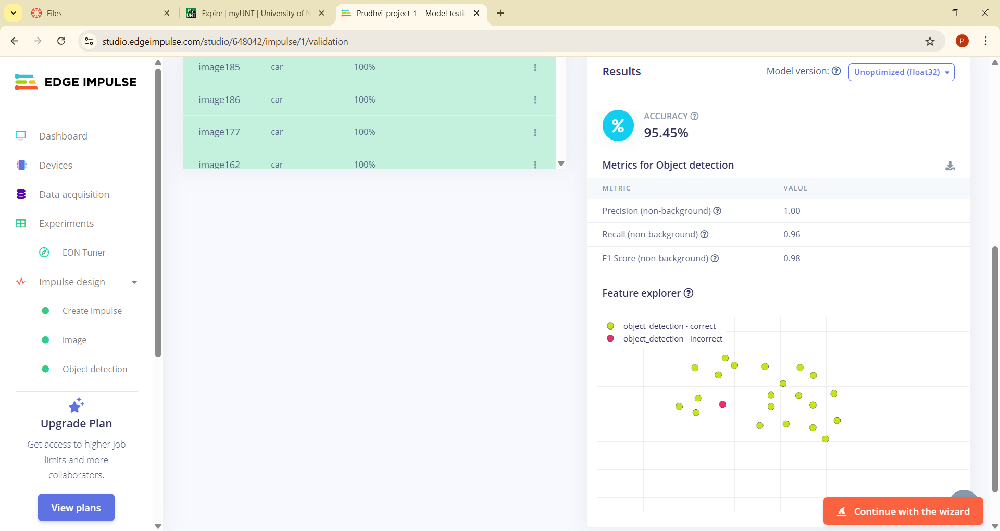
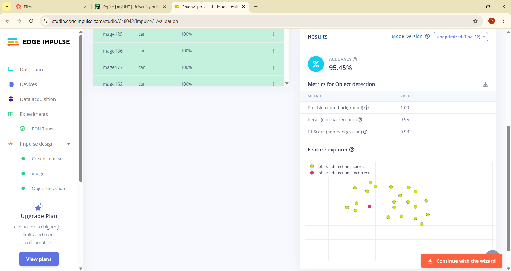
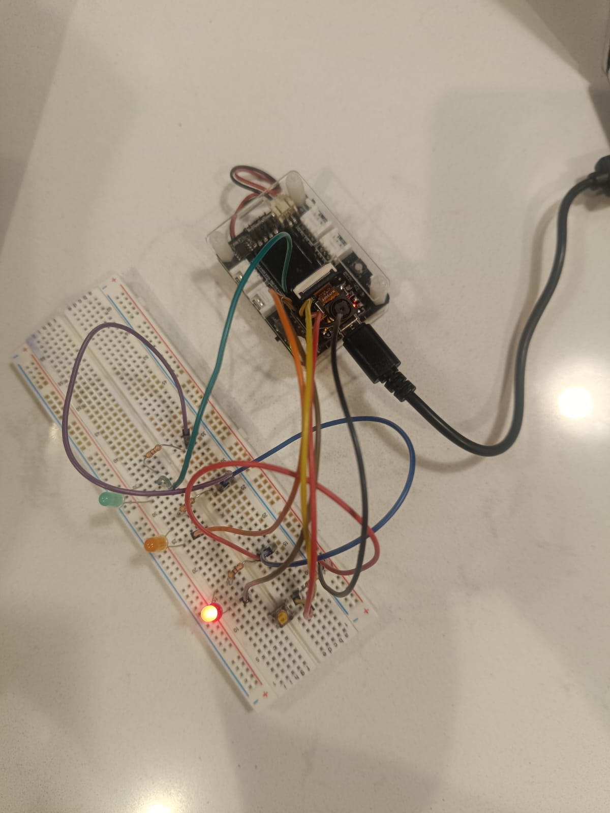

Object Detection and Traffic light management system
Part 1: Capturing the Vehicle images
Images of different kind of vehicles has been taken through camara module and all those images are stored to train the Machine learning model in Edge Impulse
Below code is used to capture the vehicle images thorugh camara module
Image Capture Code File:
Part 2: Train an ML model
Those stored images are added and processed in the interface Edge Impulse and Machine Learning model will be trained with the images provided
After validation we can even check its confidence based on some test data


 

Part 3: Circuit connection
Here we connect the traffic light circut and implement object detection mechanism as below
Part 4: Implementing the trafic light system with Object detection
CAR_GO (State 0) 📠Traffic Light: Green for Cars, Pedestrian Signal OFF 📠Duration: 3000ms 📠Transition Conditions: • If no car and no pedestrian → stay in CAR_GO. • If a car is detected or pedestrian presses button → transition to CAR_WAIT. CAR_WAIT (State 1) 📠Traffic Light: Yellow for Cars, Pedestrian Signal OFF 📠Duration: 2000ms 📠Transition Conditions: • After delay, switch to PEDESTRIAN_GO. PEDESTRIAN_GO (State 2) 📠Traffic Light: Red for Cars, Pedestrian Signal BLINKING 📠Duration: 5000ms 📠Transition Conditions: • If pedestrian still pressing → stay in PEDESTRIAN_GO. • If pedestrian stops pressing → transition to PEDESTRIAN_WAIT. PEDESTRIAN_WAIT (State 3) 📠Traffic Light: Red for Cars, Pedestrian Signal SOLID 📠Duration: 2000ms 📠Transition Conditions: • Return to CAR_GO when the pedestrian phase is complete.
Implementation code file: